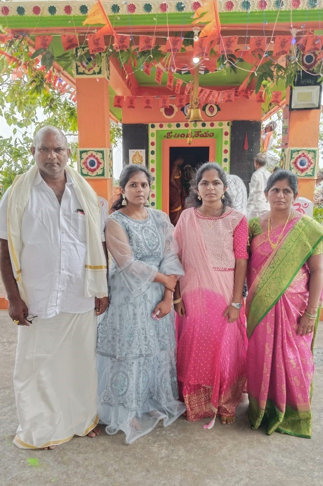

You always make and feel our parents special and proud..!
I hope one fine day i to make them feel special.
From childhood i wanted to say I like you but u always end up by shouting me which i can't take but i know it is for my well being.!
On this day i wanted to thank you for being who you are and making me to do my best..!
I just wanted to take a moment to express my deepest gratitude for all the support and guidance you've extended to me over the years. Your unwavering belief in me has been a constant source of strength, and I can't thank you enough for always being there, not just as my sister, but as a pillar of support. Your dedication and hard work have not only made our parents proud but have also set a remarkable example for me to follow. Please know that your little sister loves you immensely, and I am endlessly grateful to have you in my life.
Your journey, marked by resilience, determination, and unwavering dedication, has not only been a source of inspiration for me but for our entire family. From the countless late nights studying to the early mornings chasing your dreams, you've shown us what it means to pursue excellence with unwavering passion. Your achievements have not only been a testament to your hard work but have also filled our hearts with immense pride. Your commitment to excellence, coupled with your compassionate heart, has touched the lives of everyone around you. You've become a beacon of hope and inspiration, lighting the path for us all to follow. As a family, we stand together in awe of your accomplishments, grateful for the person you are, and endlessly proud of the person you've become. Your presence enriches our lives in ways we could never fully express, and for that, we are eternally grateful.